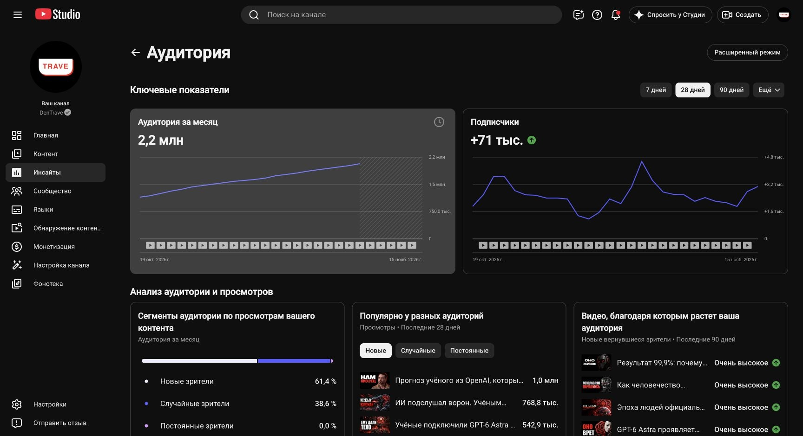
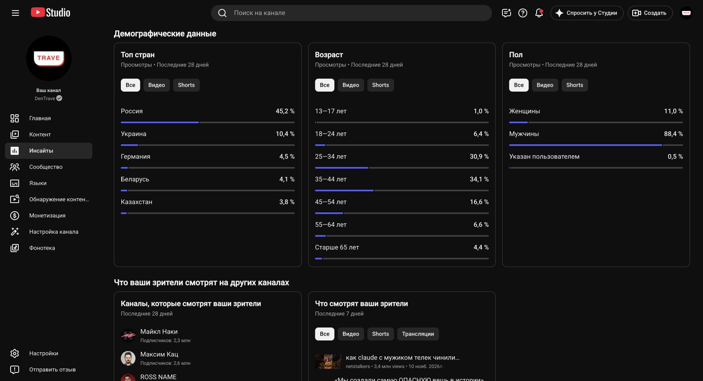

DenTrave - YouTube-канал Дениса про искусственный интеллект и технологии. Длинные видео на русском языке: что происходит с нейросетями, как они меняют работу и жизнь, простым и живым языком.
Канал: youtube.com/@DenTrave
Обновлено 19.11.2026.
Канал в цифрах
Данные YouTube на 19.11.2026.
- Подписчиков: 140 тыс.
- Просмотров за всё время: 18,3 млн
- Как часто выходят видео: 31 длинный ролик за последние 30 дней, почти каждый день
- Типичный ролик: 307 тыс. просмотров (медиана последних 10 роликов старше недели, от 119 тыс. до 1,16 млн)
Аудитория
Снимок YouTube Studio от 16.11.2026, период 19.10-15.11.2026 (последние 28 дней).
- Аудитория за месяц: 2,2 млн
- Новых подписчиков за период: +71 тыс.
- География просмотров: Россия - 45,2%, Украина - 10,4%, Германия - 4,5%, Беларусь - 4,1%, Казахстан - 3,8%
- Возраст: 25-34 года - 30,9%, 35-44 года - 34,1%, 45-54 года - 16,6%
- Пол: мужчины - 88,4%, женщины - 11,0%


Цифры округлены самой платформой и относятся к указанному периоду.
Рекламные кейсы
Интеграции, которые уже вышли на канале. Просмотры роликов по данным YouTube на 19.11.2026 (рядом - сколько дней прошло с публикации).
- Пипл (зарубежные карты и eSIM) - 393 тыс. просмотров за 21 день. Ролик «Никогда не пиши ЭТО в ChatGPT», 29.10.2026. Смотреть
- Kodacode (ИИ для программистов) - 299 тыс. просмотров за 9 дней. Ролик про записи мыслей GPT-6 Astra, 10.11.2026. Смотреть
- Syntx AI (100+ ИИ-инструментов в одном месте) - 246 тыс. просмотров за 20 дней. Ролик «ИИ получил тело и вышел в продажу», 30.10.2026. Смотреть
- chataibot (доступ к нейросетям) - 206 тыс. просмотров за 8 дней. Ролик «Fable 5.2 против GPT-6 Astra и Opus 5.5», 11.11.2026. Смотреть
- Zarub (виртуальные карты Visa/Mastercard) - 171 тыс. просмотров за 7 дней. Ролик «Я потратил больше 1000$ на подписки ИИ», 12.11.2026. Смотреть
- GGSel (подписки ChatGPT, Cursor, Claude) - 168 тыс. просмотров за 5 дней. Ролик «Зачем учиться, если есть ИИ», 14.11.2026. Смотреть
Ролики продолжают набирать просмотры после выхода, цифры выше - на дату обновления страницы.
Быстрый запуск - тоже реально. chataibot сам предложил тему ролика про Fable 5.2 и попросил интеграцию за сутки до выхода. Мы сделали видео под эту тему и выпустили его вовремя.
Формат рекламы
- Интеграция внутри видео - реклама встроена в ролик и подаётся в стиле канала.
- Место: обычно в первой трети ролика, когда зритель уже смотрит, но ещё не ушёл.
- Длительность: чаще всего слот на 45-60 секунд.
- Короче или длиннее: интеграция до 30 секунд стоит дешевле, дольше 60 секунд - дороже.
- Ссылка на продукт - в описании ролика, детали обсуждаем.
Как проходит работа
- Заявка. Вы присылаете продукт, ссылку, желаемые сроки и говорите, есть ли у вас ТЗ. Нет ТЗ - не страшно, текст напишем сами.
- Согласование. Обсуждаем стоимость, при желании - в каком ролике или на какую тему разместиться, и примерную дату выхода.
- Подготовка без предоплаты. Денис пишет текст интеграции и снимает её.
- Утверждение. Вы смотрите текст и уже смонтированный кусок интеграции, при необходимости вносим правки. Готовим быстро.
- Оплата - после утверждения, перед публикацией.
- Публикация. Обычно в течение 4 дней после согласования, чаще всего в первые 2 дня. Возможен выход и день в день.
Оплата
- Только фиксированная сумма. За процент от продаж, CPA и оплату за результат не работаем.
- Предоплаты до утверждения нет: платите, когда увидели и приняли готовую интеграцию.
- Способы: USDT, международная карта или российская карта.
- Гарантий просмотров и продаж не даём. Показываем реальную статистику канала и прошлые кейсы, а результат зависит от продукта и предложения.
Стоимость
Цена и детали обсуждаются индивидуально с каждым клиентом. Пакет из нескольких интеграций обсуждаем отдельно.
Как начать
Напишите в Telegram-бот @Dentravebot - сообщения читает живой человек и отвечает там же.
Почта для предложений: ads@dentrave.com